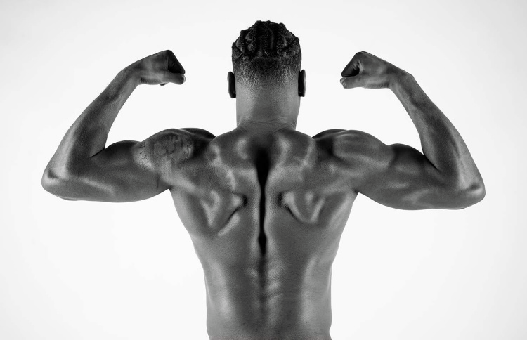

Science-Driven Training
Programming built around proper form, efficient movement, and reducing injury risk while improving performance.
Broadcaster • Performance Coach • Speaker
Former Division I athlete helping athletes, organizations, and audiences perform at their highest level—on camera, in competition, and in life.
As Seen On
Broadcasting
A portfolio for producers, SIDs, athletic directors, conferences, and media partners looking for a prepared, versatile, and authentic broadcast voice.
Analysis, pace, storytelling, and player insight.
Former Division I perspective with situational feel.
Rotations, rhythm, momentum, and match flow.
Game strategy, adjustments, and pressure moments.
Championship coverage with athlete-centered storytelling.
Alvin Delve
About Alvin
Alvin Delve is a broadcaster, performance coach, speaker, former Division I athlete, and founder of DelveFitness. His work blends preparation, presence, athletic experience, and human-centered storytelling.
Whether he is calling a game, coaching an athlete, leading a room, or building a brand, Alvin brings the same standard: clarity, energy, discipline, and authenticity.
Resume
Multi-sport analyst with experience across college sports, international basketball, high school athletics, and sports media platforms.
Former Division I athlete with a coaching background rooted in movement, strength, mindset, and body mechanics.
Available for hosting, panels, athlete development talks, leadership conversations, and brand partnerships.

Delve Into Fitness
Biomechanics • Strength • Mobility
Delve Into Fitness blends biomechanics, strength training, mobility, and mindset to help athletes, professionals, and fitness enthusiasts build sustainable performance—not just short-term results.
Programming built around proper form, efficient movement, and reducing injury risk while improving performance.
A balanced approach that helps athletes and professionals move fluidly, build power, and perform at their peak.
Every session is adapted to the client’s goals, sport, profession, movement history, and current ability.
Physical development supported by consistency, confidence, and the mental toughness required for lasting progress.


Training for athletes, professionals, and anyone committed to performing at a higher level.
Movement quality, joint integrity, proper form, and efficient force production.
Mobility, assisted stretching, flexibility, recovery, and longevity-focused support.
Progress designed to last beyond one workout, one season, or one goal.
Contact
For broadcasting, speaking, training, media, or partnership opportunities, reach out below.